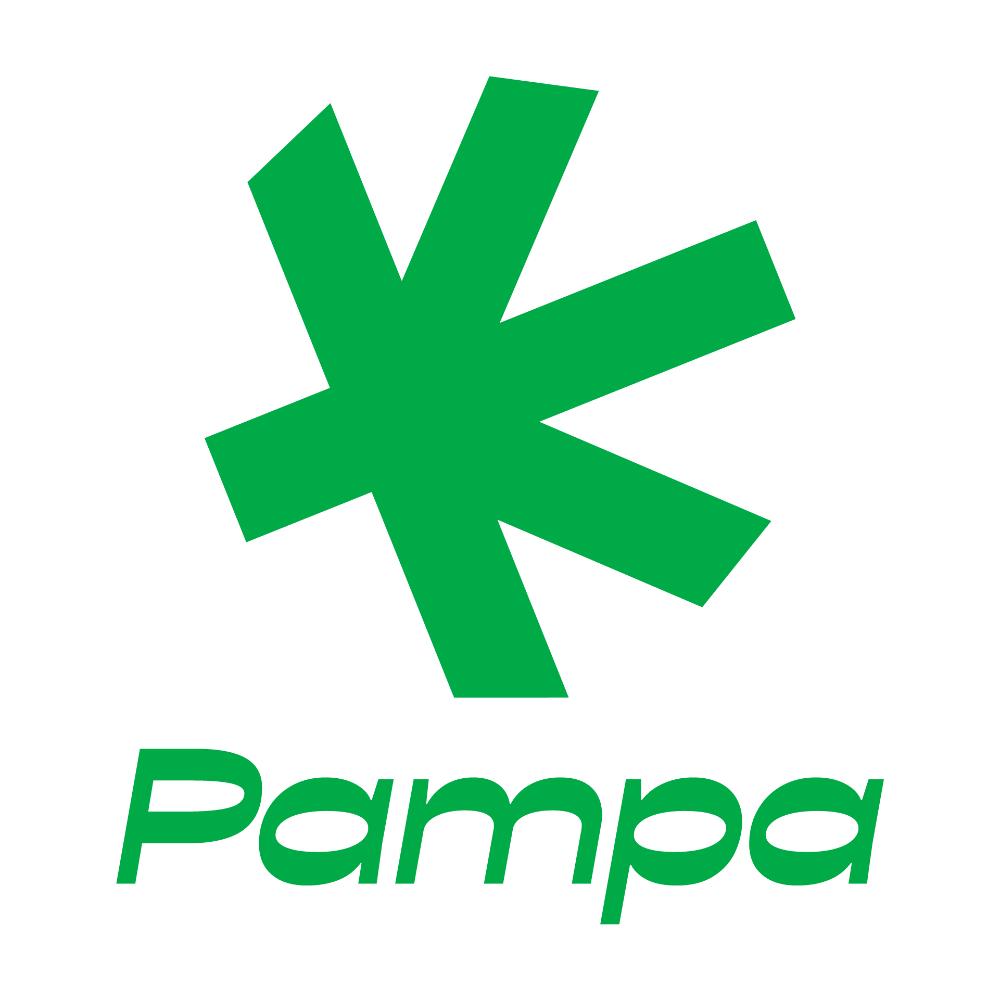

A P.A.M.P.A. é uma associação de pacientes sediada em Guaíba/RS que atende pacientes de Porto Alegre e de toda a Região Metropolitana — com orientação, autocultivo associativo e atuação política por políticas públicas de saúde.

Recebemos cada paciente e sua família com escuta, respeito e apoio humano em todas as etapas do tratamento.
Levamos informação séria sobre cannabis medicinal, legislação e autocultivo para pacientes e para a sociedade.
Atuamos junto ao poder público por políticas que garantam acesso justo e gratuito ao tratamento canábico.
A P.A.M.P.A. — Pacientes Associados por Medicina, Política e Autocultivo — nasceu para apoiar quem busca tratamento com cannabis, com CNPJ e estatuto próprios, sediada em Guaíba/RS.
Trabalhamos em três frentes: acolhimento de pacientes, educação sobre cannabis medicinal e autocultivo, e incidência política por leis e programas públicos de acesso ao tratamento.
Seja para quem procura uma associação canábica, uma associação de cannabis no Rio Grande do Sul ou uma associação de cannabis em Porto Alegre, a P.A.M.P.A. está pronta para acolher e orientar.
Tenha em mãos a prescrição de um profissional de saúde indicando o tratamento com cannabis.
Preencha nosso formulário de cadastro com seus dados e envie os documentos solicitados.
Nossa equipe confirma seu cadastro pelo WhatsApp e explica os próximos passos do tratamento.
Apoiamos o Projeto de Lei 023/2024 em Guaíba/RS, que cria o Programa Municipal de Uso de Cannabis para Fins Medicinais — garantindo, com base no direito constitucional à saúde, acesso gratuito a medicamentos à base de cannabis pelo poder público municipal.
Fale com a nossa equipe e tire suas dúvidas sobre associação, autocultivo e acesso à cannabis medicinal.
 Pampa
Pampa